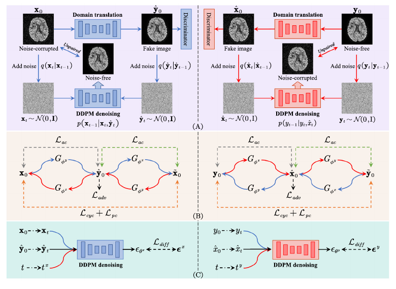
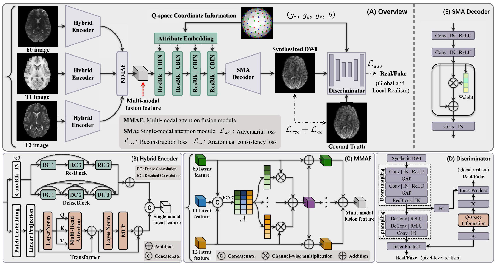
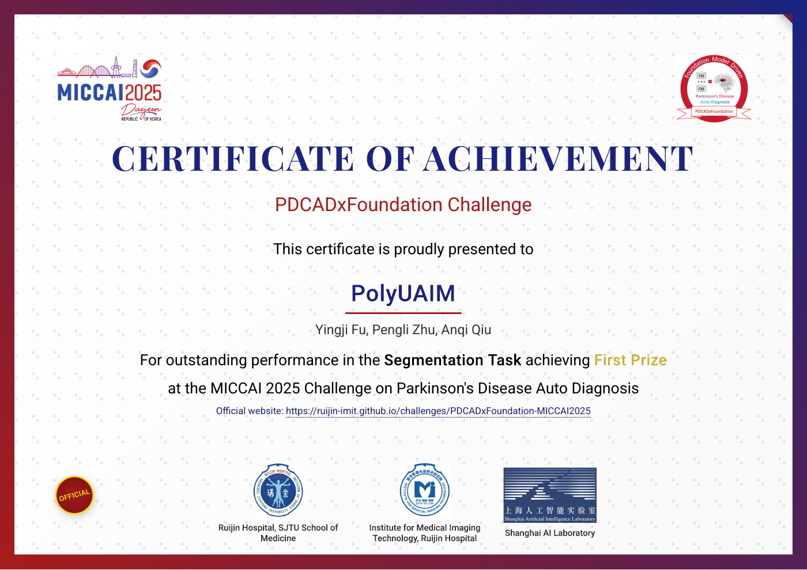

01 / Brain & body
Neuroimaging and population health
Studying how body composition relates to brain structure, function, and cognition.
I study how the brain relates to broader patterns of health, and develop AI methods that make medical imaging and longitudinal health data more informative.
Health Technology and Informatics · The Hong Kong Polytechnic University · Hong Kong
Supervised by Professor Anqi Qiu ↗
Biomedical Engineering · City University of Hong Kong · Hong Kong
Biomedical Engineering · Southern Medical University · Guangzhou, China
Undergraduate research supervised by Professor Bing Huang ↗ and Associate Professor Hua Zhang ↗
A few connected questions guide my work, from human brain health to more efficient imaging models.
Studying how body composition relates to brain structure, function, and cognition.
Improving diffusion MRI and synthesizing amyloid PET from structural brain MRI.
Reducing redundant visual tokens in 3D medical vision-language models while preserving clinically useful information.

Cycle-conditional diffusion model for noise correction of diffusion-weighted images using unpaired dataCycle-conditional diffusion learns to correct noisy diffusion MRI from unpaired data, reducing the need for matched noisy and clean scans.Paper ↗Open PDF ↗
Q-space Guided Multi-Modal Translation Network for Diffusion-Weighted Image SynthesisQ-MMTN synthesizes densely sampled diffusion MRI from flexible q-space sampling, using structural MRI as complementary information.Paper ↗PDCADxFoundation Challenge · MICCAI 2025
PolyUAIM team · Yingji Fu, Pengli Zhu, Anqi Qiu

Southern Medical University · One of two outstanding graduates in the biomedical engineering cohort
Southern Medical University · Deep learning classification of inflammatory bowel disease pathology images
6th National College Student Art Competition · Clarinet section supervisor · Competition ↗
Southern Medical University Summer Camp
Southern Medical University
Southern Medical University
For research conversations, collaborations, or just a hello.